Le chevalier tel qu'il est en jeu (même modèle, mêmes couleurs, rien n'a changé dans son look) + les yeux Rinnegan / Mangekyo. Croquis dessinés avec le vrai modèle du chevalier. La lance et la ruée sont codées dans le mod (2026-11-16).
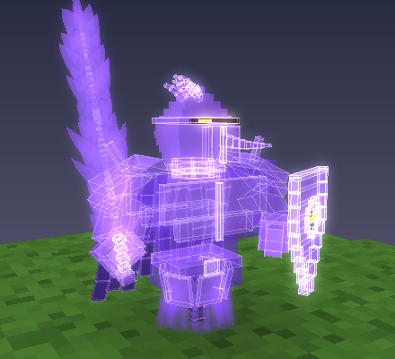
Os → chair → armure → le chevalier, à chaque appui. Il garde son casque de couleur.
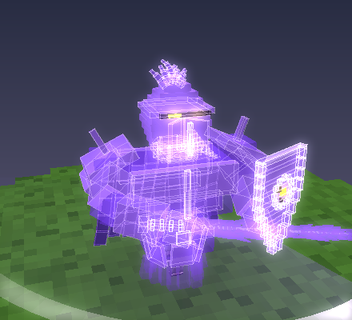
Grande épée violette, gauche puis droite, sur tout ce qui est devant.
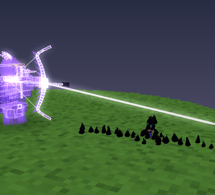
La flèche traverse tout, pose une bande de flammes noires au sol et une flaque là où elle se plante.
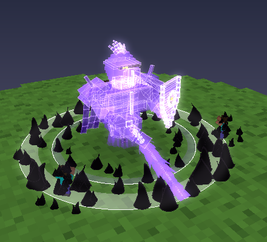
Il abat l'épée : une vague de flammes noires part tout autour, une quarantaine de flammes restent au sol.
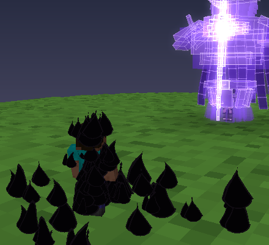
Amaterasu : rien ne les éteint, l'eau non plus. Qui marche dedans brûle (pas lui ni ses alliés).
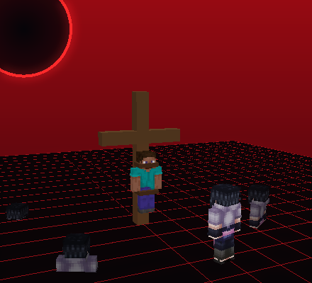
Il regarde quelqu'un dans les yeux : 30 s dans le monde rouge, attaché à la croix. Au réveil, 3 cœurs perdus au plus.
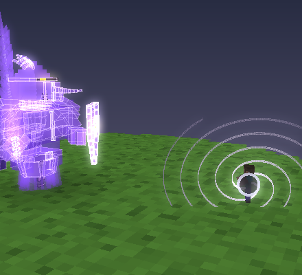
Sur quelqu'un : aspiré en spirale, 10 s dans la dimension du Kamui. Sur personne : il se cache lui-même, invisible et intouchable.
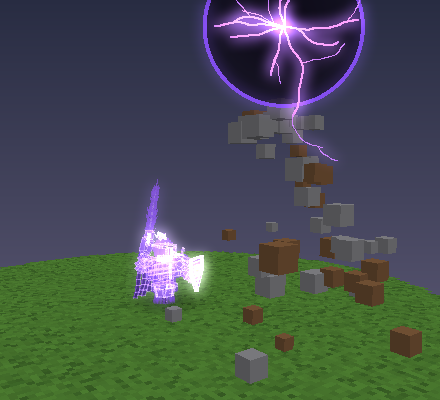
Sa cible monte dans une sphère noire qui aspire le sol et tout ce qui vit, la météorite se forme puis explose.
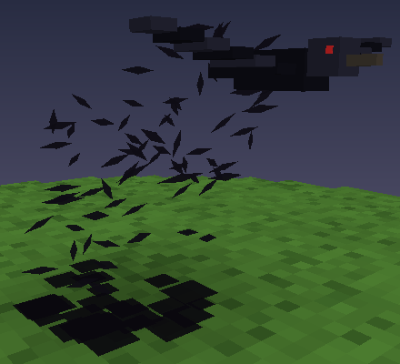
Il explose en encre et plumes et s'envole en corbeau : vole vite, entend tout, personne ne le voit ni ne l'entend. Ne frappe pas.
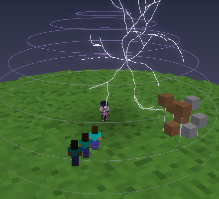
L'écran se fissure et les 10 dernières secondes se rembobinent autour de lui : blocs, places, vie ; ce qui est mort revient.
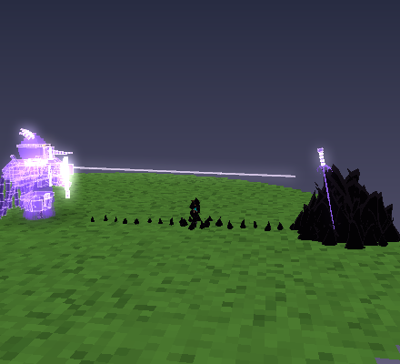
Au 3e coup d'épée de suite (en moins de 2 s), il lance son épée comme une lance : elle file tout droit, embrase ceux qu'elle traverse et se plante en faisant monter un pilier de flammes noires. L'épée revient dans sa main.
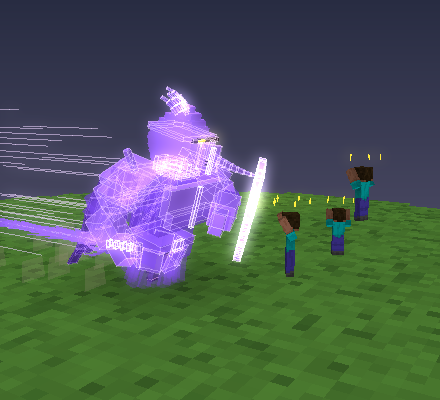
Il lève son bouclier et fonce devant lui : tout ce qu'il percute est projeté et sonné 1 s. S'il percute un mur, l'onde de choc pose des flammes noires autour.
| Attaque | Touche | Dégâts de base | Sur un joueur | Recharge |
|---|---|---|---|---|
| Coups d'épée | clic gauche | 16 | 3 cœurs max | 0,4 s |
| Arc aux flammes noires | clic droit | 10 + 2/s (10 s) | 3 cœurs max | 8 s |
| Grand coup | accroupi | 22 | 3 cœurs max | 15 s |
| Tsukuyomi | J | illusion | 3 cœurs au réveil | 1 min |
| Kamui | L | — | envoyé 10 s ailleurs | 40 s / 20 s |
| Météorite | I | 28 + 18 | 3 cœurs max par coup | 1 / éveil, 5 min |
| Corbeau | , | — | — | 1 min |
| Fracture temporelle | . | — | rembobine 10 s | 3 min |
| Lance d'Amaterasu | 3e coup d'épée | 14 + pilier | 3 cœurs max | 12 s |
| Ruée du bouclier | accroupi + clic droit | 10 + sonné 1 s | 3 cœurs max | 14 s |
Les touches sont celles par défaut, chacun peut les changer dans Contrôles. Aujourd'hui le corbeau et la fracture ne sont que pour « susanodev » et sans recharge. Dans ce niveau 3 final, tout le monde qui a le Susano 3 les aurait, avec les recharges ci-dessus.